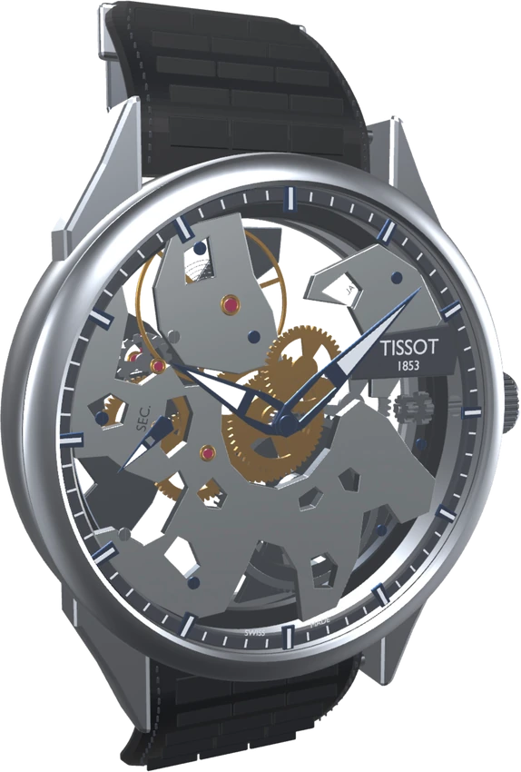
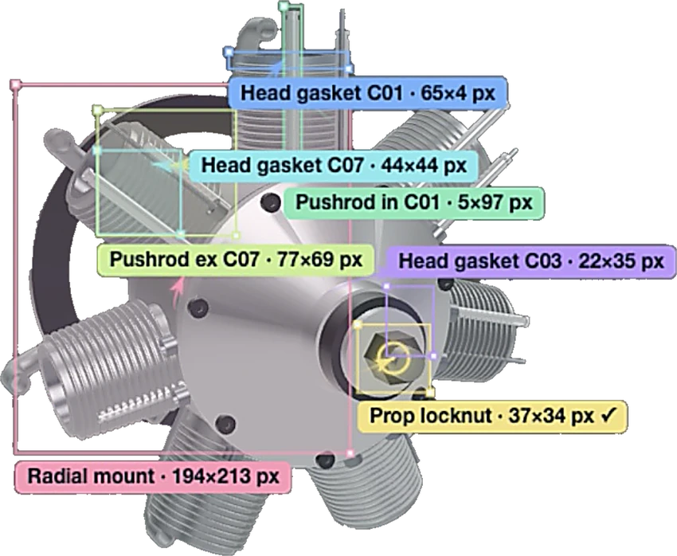

Your Digital
Product Explorer.
Live Demos
Click and Explore
FR7-420 Sirius

TissotT-Complication Squelette
From Photos to Digital Twins
-
On it!
Start with product photos and a short brief describing what to recreate.
-

The agent models individual parts and assembles them into a 3D model.
-
Rotate the finished model and pull the assembly apart to see how it fits together.